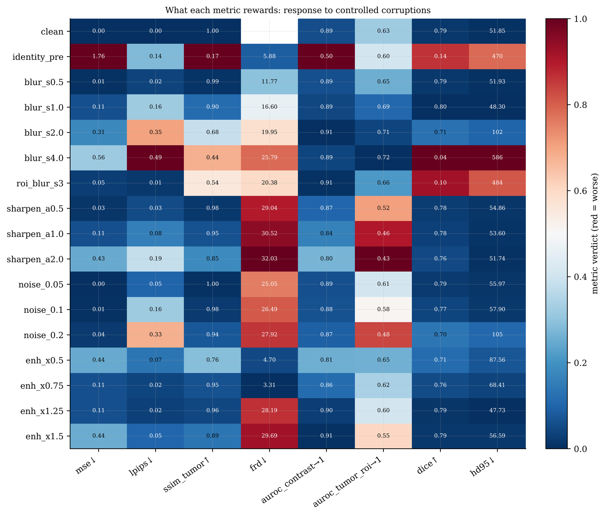
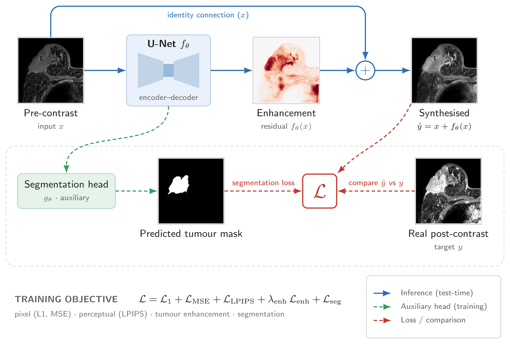
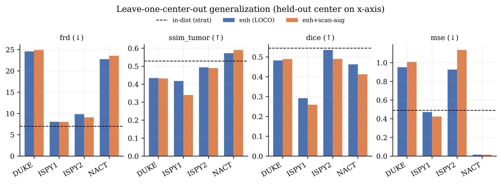

When Regression Beats Generation: Virtual Contrast-Enhanced Breast MRI and What Its Metrics Reward
1 Department of Radiology and Biomedical Imaging, University of California San Francisco
2 College of Engineering, University of California Berkeley
MICCAI 2026, Deep-Breath workshop and MAMA-SYNTH challenge
Drag or tap across the image to compare. The tumour is outlined in green. These are the three test cases with the largest tumours.
Breast DCE-MRI needs an intravenous gadolinium injection. We predict the post-contrast image from the pre-contrast scan with a residual U-Net that starts from a copy of its input, and at a matched budget it beats GAN and diffusion baselines on every fidelity and tumour metric. Along the way we found that the challenge's eight metrics measure less than they appear to.
What the metrics reward
To see what the challenge's metrics respond to, we set the models aside and altered the ground-truth images directly, then re-scored them with the official pipeline. Scaling the enhancement up or down exposes the clearest problem.
| Scale | 0.5× | 0.75× | 1.25× | 1.5× | Copy input |
|---|---|---|---|---|---|
| MSE | 0.44 | 0.11 | 0.11 | 0.44 | 1.76 |
| FRD | 4.70 | 3.31 | 28.19 | 29.69 | 5.88 |
Both metrics: lower is better. Scales are relative to the true enhancement; "copy input" scores the unaltered pre-contrast image.
MSE treats too little and too much enhancement the same. FRD barely notices too little: under-enhancing by a quarter scores better than simply copying the pre-contrast input, while over-enhancing by a quarter scores almost five times worse.

Across all 17 corruptions, MSE, tumour SSIM, DICE and HD95 rank them almost identically (Spearman ρ between 0.72 and 0.87), so the eight metrics span roughly three to four independent axes.
Model comparison
Stratified split, shared objective. Select a column to sort by it. Our models are shaded and the best value in each column is bold. Each generative family is one configuration at matched capacity.
Method
Most of the post-contrast image is already in the pre-contrast scan, so a U-Net predicts only the enhancement and adds it to the input through an identity connection. Its output layer starts at zero, so training begins from an exact copy of the input. A loss on tumour-region enhancement, a softplus variant that can only add signal, and a segmentation head used only during training complete the model.

Generalisation to unseen collections
Trained on three collections and tested on the fourth, FRD rises from 7.0 to between 9 and 25, worst on the two single-institution cohorts. Scanner-style augmentation does not close the gap, so models should be selected on held-out collections rather than the stratified split.

Limitations
Each generative family is a single configuration trained once at our capacity budget, so a tuned or larger model may close part of the gap. Both generative baselines are conventionally parameterised, generating the full post-contrast image, whereas our U-Net predicts a residual on the pre-contrast input, and the GAN's generator has no skip connections. Residual generative variants, such as an adversarially trained residual U-Net or a bridge flow from the pre-contrast latent, would give a stronger comparison. The cross-domain results and the metric probe are single runs. We synthesise one 2D slice per patient, and DICE and the AUROCs inherit the errors of the challenge's frozen models.
Citation
@inproceedings{madapati2026regression,
title = {When Regression Beats Generation: Virtual Contrast-Enhanced
Breast {MRI} and What Its Metrics Reward},
author = {Madapati, Kaushik and Gu, Hanxue and Bao, Jie and
Wang, Kang and Yang, Yang},
booktitle = {MICCAI 2026 Workshops (Deep-Breath)},
year = {2026}
}